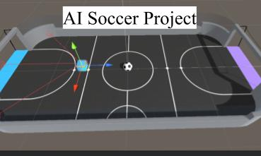

School project for AI
The goal of this project was to use Unity, and a supported Unity package called MLAgents to train a soccer playing agent. This involved working with Unity and MLAgents, implementing our own AI algorithm into Python, and testing and training for many hours.

Unity is quickly becoming a viable option to train and test AI software due to its well designed virtual environment, and with the recent creation of MLAgents. MLAgents allows for easy integration and communication between the Unity environment and an AI algorithm, with support of many different languages. For our project we decided to use a built in soccer environment provided by MLAgents that included a field, a ball, a player, and observations that are easy to access for a learning algorithm. We implemented a semi-gradient sarsa algorithm for our AI learning. We chose this algorithm for its online policy nature. We then tested many different observations, like position, velocity, depth perception sensors, and others to find the best combination for training. Our end result was an AI soccer player that could locate a randomly placed ball, and hit it towards a goal.
My job on this project was to interface with Unity, getting the environment completely set up. I worked with getting a list of all observations possible, and then researching which would most likely be best for learning. Additionally, I connected our Python written algorithm with our Unity environment. I also helped with writing the algorithm in Python.
Below is our full write-up for the project, I would encourage reading to get a full understanding!
Here is the PDF to our full write-up